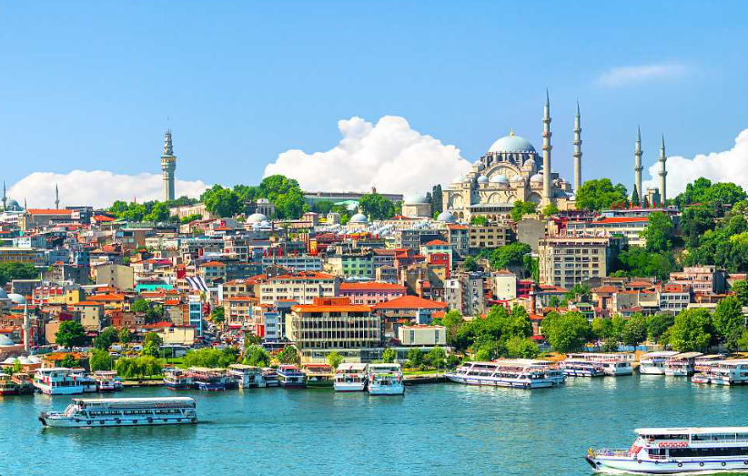
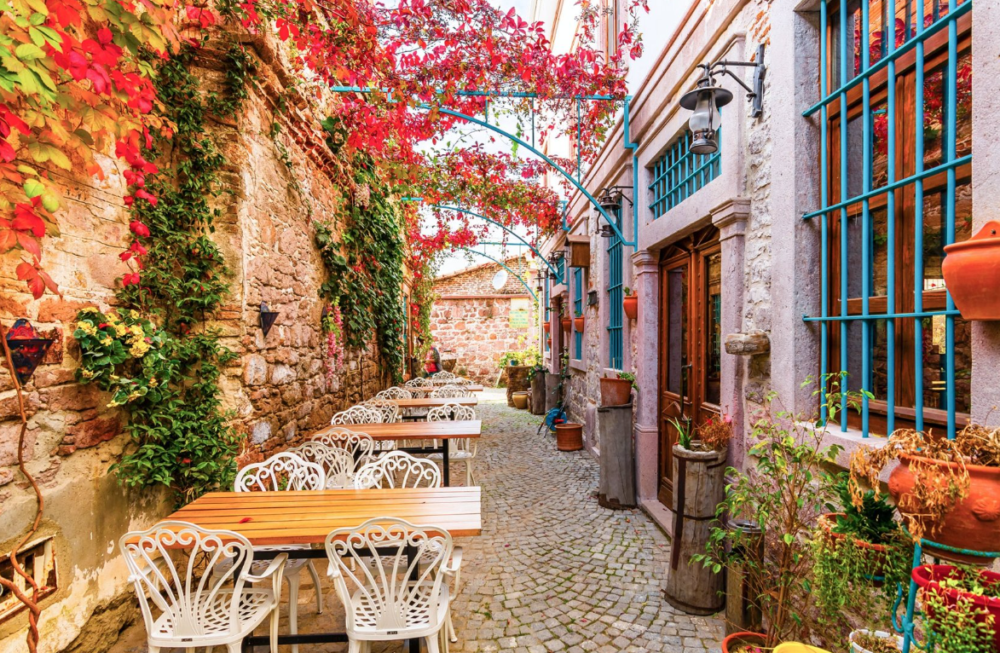

Turkey is famous for splendid resorts which are the most lucrative areas of the country. When spring comes, temperature rises up significantly and by April reaches +20…23 °C in afternoon and +13 °C at night. Sea water warms up to 20 °C. This is the best vacation period for those people, who can barely stand extensive heat. In spring (May, 19), one of the most respected holidays - Commemoration of Atatürk, Youth and Sports Day – is celebrated.During springtime, multiple citrus trees, pomegranates, figs, almonds, apricots, and cherries blossom. Ploughed fields, market and vegetable gardens are cultivated closer to the coastal zone. Trees of the numerous forests put on their green coats. Diversity of the world of birds gets ready for breeding the future generation. In this time of year, Turkey is remarkably beautiful because of many tulip plantations.
We love seeing attractions but stay away from them during summer, when tourism in Turkey peaks, both foreign and domestic. Reasons are congested traffic, long queues to get into attractions, and fewer opportunities to fully appreciate them with serenity. Meanwhile, Spring means fewer crowds and chances to enjoy historic sites and attractions at our leisure without navigating hordes of visitors. Tourists also have more options at grabbing hotel rooms at reasonable prices since peak tourism season is yet to come.
When Spring arrives, our routines also change. Heart-warming dishes like soups, casseroles, and stews are replaced with seasonal produce. Ask anyone who knows Turkey, and they will say, fruit and vegetables burst with flavour. Lemons, strawberries, aubergines, artichokes, herbs, peppers, and spinach burst with flavour, as do apricots and cherries. Fish lovers enjoy seasonal red mullet, a Turkish favourite, and at the end of Spring, Pandora fish. Both are tasty, twinned with mezes and traditional glasses of Turkish raki.
 